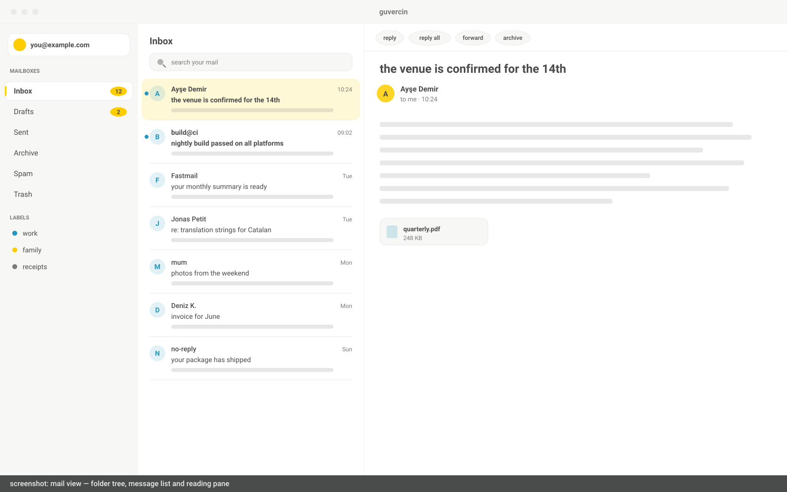
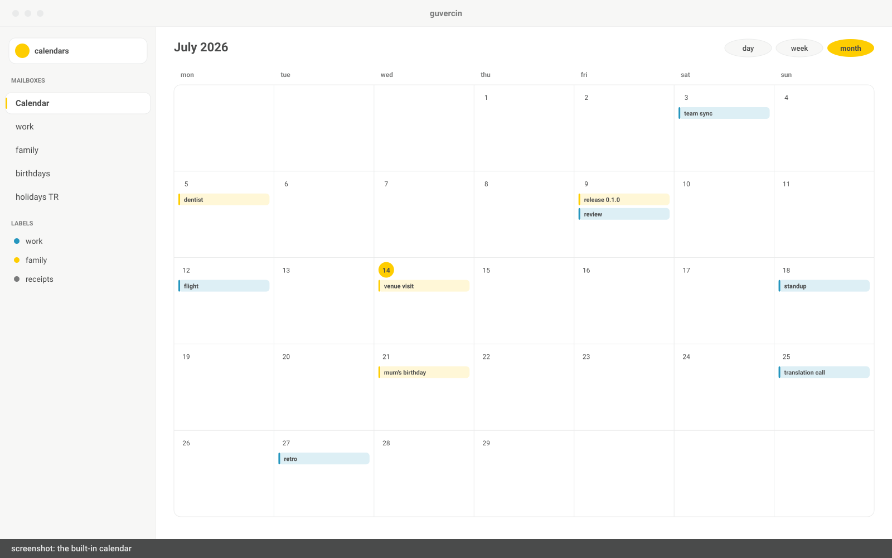
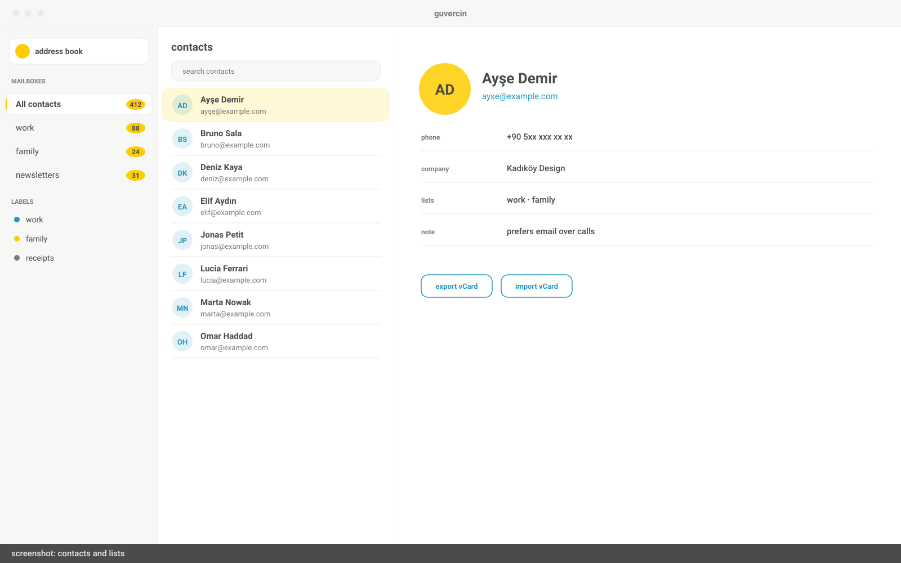
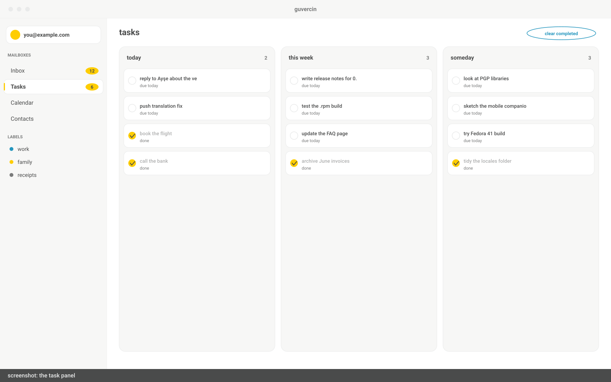

guvercin'in yaptığı her şey
bir posta uygulaması, bir takvim, bir adres defteri ve bir görev listesi — tek bir yerel pencerede, kendi makinende.

uslu duran bir gelen kutusu
birden fazla IMAP ve SMTP hesabı yan yana, her biri kendi yerel veritabanıyla. sıralamasını değiştirebildiğin tam bir klasör ağacı, özel etiket sıralaması ve okunmamış sayılarının nasıl görüneceğine dair bir seçim.
sohbet görünümü açık ya da kapalı, ayarlanabilir bir okuma bölmesi, hesap başına tema ve yazı boyutu. arama — yapılandırılmış gelişmiş arama dahil — çevrimdışıyken de çalışmaya devam eder.
- .eml dosyalarını doğrudan aç — guvercin message/rfc822 dosyaları için kayıtlı bir uygulamadır
- bir iletiyi .eml ya da ham RFC822 olarak dışa aktar
- bir göndereni engelle, kural yerelde saklanır
- iletiyi yazdır

Google için tek tık, diğer herkes için düz IMAP
“Google ile devam et”, sistem tarayıcında bir OAuth2 (XOAUTH2) PKCE akışı çalıştırır; yani parolan guvercin'e hiç yazılmaz ve hiçbir jeton arayüzden geçmez. uygulama çalışan bir OAuth istemcisiyle geliyor, o yüzden kutudan çıktığı gibi çalışır.
diğer her şey için guvercin adresinden yola çıkıp sağlayıcının sunucularını yoklar; sunucu, port ve şifrelemeyi elle değiştirmene de izin verir. Gmail, Outlook ve Hotmail, Yandex, iCloud, Fastmail ve kendi sunucularınla çalışır.

düzgün yaz
biçimlendirme şeritli zengin metin editörü, sürükle bırak ekler ve ayrı bir yerel pencereye çıkarabildiğin bir yazma ekranı. taslaklar yerelde kaydedilir ve sonra gönderilebilir.
dosya yöneticinde herhangi bir dosyaya sağ tıklayıp “guvercin ile gönder”i seçerek o dosya ekliyken bir ileti başlat — Windows ve Linux'ta otomatik olarak kaydedilir. macOS'te dosyayı pencereye sürükle ya da Birlikte Aç'ı kullan.

haftan, aynı pencerede
hesap başına birden fazla takvim, kendi sunucuna karşı CalDAV eşitlemesi, Google Takvim eşitlemesi ve .ics içe/dışa aktarımı.
başka bir sekmede değil, postanın yanında durur; bütün mesele de bu.

gerçekten senin olan bir adres defteri
kişi listeleri ve gruplar, vCard içe/dışa aktarımı ve Google Kişiler eşitlemesi.
gönderen avatarları ileti görüntülenirken çözülür, adresler sen yazarken tamamlanır.

postanın yanında yapılacaklar
birden fazla görev listesi, tamamlananları tek dokunuşla temizleme ve Google Görevler eşitlemesi — yani o e-postayla ilgili yapman gereken şey, e-postanın yanında duruyor.

uçakta da çalışan bir posta uygulaması
posta kutuları yerel bir veritabanına eşitlenir; böylece postan, eklerin, satır içi görsellerin ve arama bağlantı olmadan da çalışmaya devam eder.
çevrimdışıyken yaptığın her şey kuyruğa alınır ve döndüğünde tekrar oynatılır; istediğin an tam ya da posta kutusu bazında eşitleme başlatabilirsin.

kendine göre ayarla
açık ve koyu temalar, artı sistemi izleme, ve dosyadan içe aktarabildiğin özel temalar. uygulamayla birlikte 64 arayüz dili geliyor; hepsi depo üzerinden katkı olarak geldi.
guvercin Hanken Grotesk ile gelir ve okuma yazı tipini hesap başına değiştirmene izin verir.
- Türkçe · English · Deutsch · Français · Español · Português
- Русский · Українська · Polski · Nederlands · Svenska · Norsk
- العربية · فارسی · हिन्दी · বাংলা · ไทย · 日本語 · 한국어 · 中文
- …ve 40 tane daha

her kısayol senin, değiştirebilirsin
kısayollar posta işlemleri, gezinme ve sekmeler, görünüm ve yerleşim, yazma ve uygulama diye gruplanmıştır; her biri tek tek yeniden atanabilir ya da kapatılabilir.

hiçbir şey görmeyelim diye tasarlandı
her veritabanı SQLCipher ile şifrelidir, önbelleğe alınan dosyalar da XChaCha20-Poly1305 ile mühürlenir; bu kapatılamaz. onları açan anahtar, kullanıcı profilindeki bir dosyadır ve senin adına çalışan her şey onu okuyabilir — bu yüzden tam disk şifrelemesini açık tut; ayrıntısı SECURITY.md'de.
uzak görseller sen istemeden yüklenmez; yani bir iletiyi açmak gönderene hiçbir şey söylemez. uygulamanın hiçbir yerinde telemetri, çökme raporu ya da reklam yoktur. kaldırırken guvercin yerel verini silmeyi önerir — ya da yeniden kurulum için saklamayı.
hiçbir şeyi değiştirmezsen, varsayılanlar
- yeni ileti Ctrl N
- yanıtla Ctrl R
- tümünü yanıtla Ctrl Shift R
- ilet Ctrl Shift F
- arşivle E
- okundu işaretle Ctrl U
- ara Ctrl F
- eşitle F5
- gönder Ctrl Enter
- taslağı kaydet Ctrl S
- ayarlar Ctrl ,
- sekmeyi kapat Ctrl W